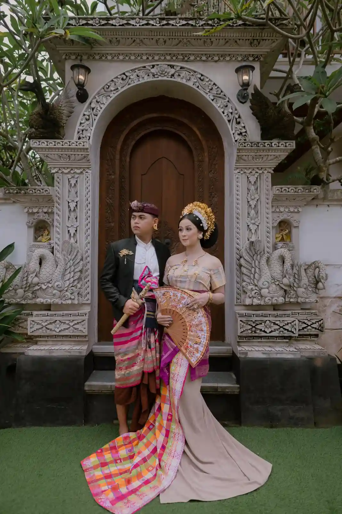
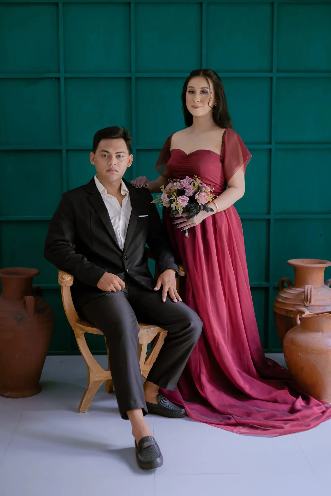

Edi & Winda
Jumat, 30 Januari 2026
Kepada Bapak/Ibu/Saudara/i
STT Yowana Prakamphita
Loading...
Jumat, 30 Januari 2026
Kepada Bapak/Ibu/Saudara/i
STT Yowana Prakamphita
Atas Asung Kertha Wara Nugraha Ida Sang Hyang Widhi Wasa/Tuhan Yang Maha Esa kami bermaksud mengundang Bapak/Ibu/Saudara/i pada Upacara Manusa Yadnya Pawiwahan (Pernikahan) Putra dan Putri kami.

Putra pertama dari pasangan
Bapak I Made Mudita
&
Ibu Putu
Novita Dewi
Jl. Siulan No 52, Penatih Dangin Puri, Kec. Denpasar Timur

Putri kedua dari pasangan
Bapak Fatur R
&
Ibu Asri Eka
Yanti
Jl. Pidada 9, Ubung, Kec. Denpasar Barat

"Ihaiva stam ma vi yaustam, visvam ayur vyasnutam, kridantau putrair naptrbhih, modamanau sve grhe."
( Rg Veda X.85.42 )
"Wahai pasangan suami-isteri, semoga kalian tetap bersatu dan tidak pernah terpisahkan. Semoga kalian mencapai hidup penuh kebahagiaan, tinggal di rumah yang penuh kegembiraan bersama seluruh keturunanmu."
Detail Acara

Jumat, 30 Januari 2026
09.00 WITA - Selesai
Bertempat di
Jl. Siulan No 52, Penatih Dangin Puri, Kec. Denpasar Timur

Jumat, 30 Januari 2026
16.00 WITA - Selesai
Bertempat di
Jl. Siulan No 52, Penatih Dangin Puri, Kec. Denpasar Timur
00
Hari
00
Jam
00
Menit
00
Detik
Merupakan suatu kebahagiaan dan kehormatan bagi kami, apabila Bapak/ Ibu/ Saudara/i, berkenan hadir untuk memberikan doa restu. Atas kehadiran dan doa restunya kami ucapkan terima kasih.
Kami Yang Berbahagia
Keluarga
Bapak I Made Mudita
&
Ibu Putu Novita Dewi
Bapak Fatur R
&
Ibu Asri Eka Yanti